Describe your implementation of handling self-collisions.
Self-collisions were handled by partitioning the space into 3D boxes and hashing each point mass into a box
based on its position. A hash map is built to store point masses that are close to each other. For a given point
mass, we check all the other masses in its bucket in the hash table to see if there is another mass that is
closer than 2 * thickness apart. If there is, a correction vector is applied to separate them. The
final correction applied to the point mass is the average of all the corrections, scaled down by
simulation_steps to reduce sudden position corrections.
Screenshots that document how your cloth falls and folds on itself
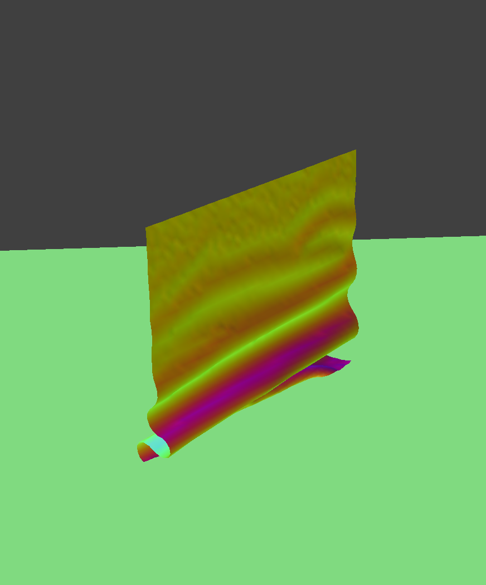
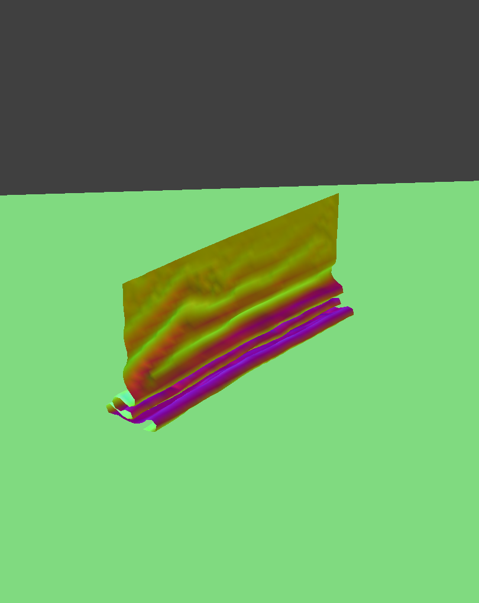
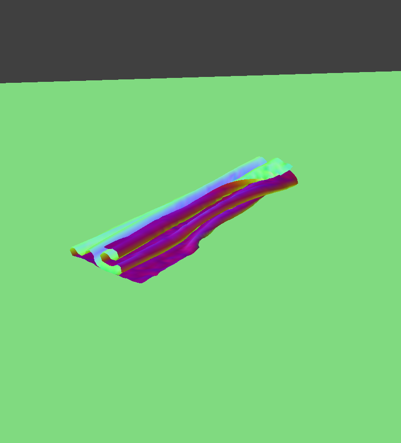
Self-collisions with various density
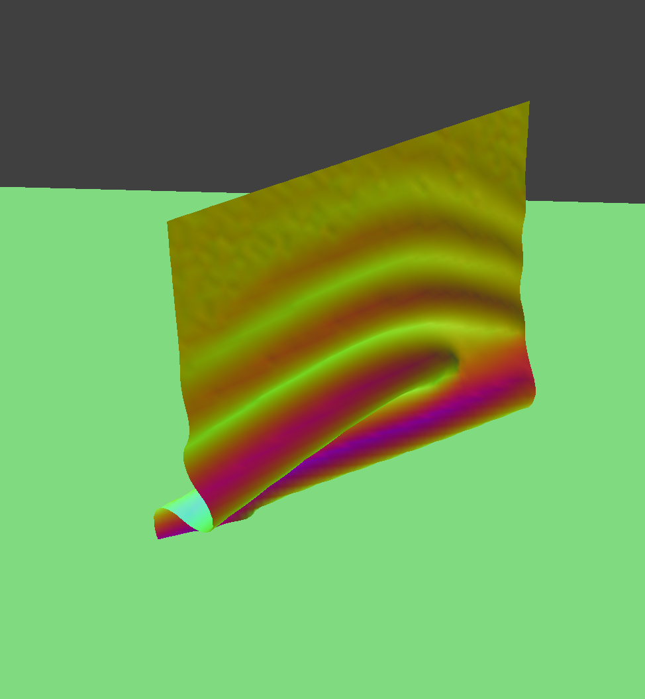
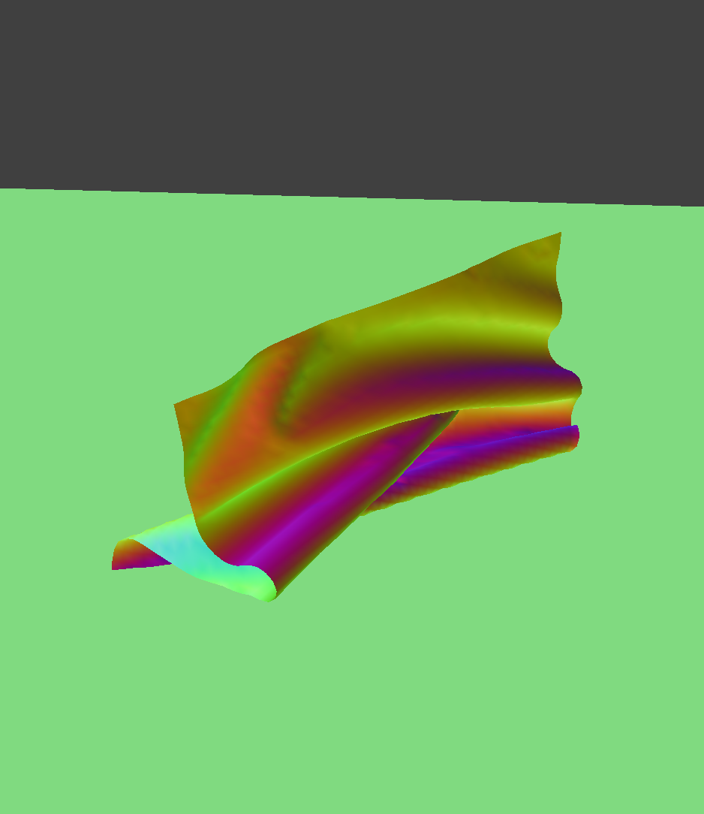
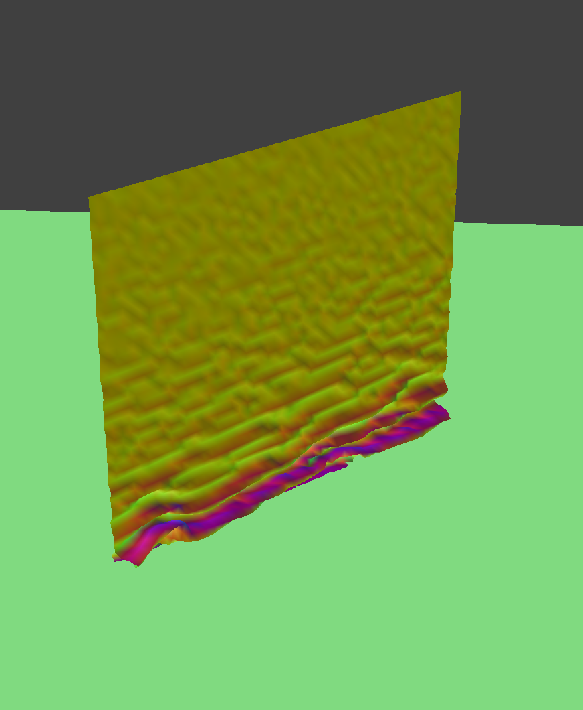
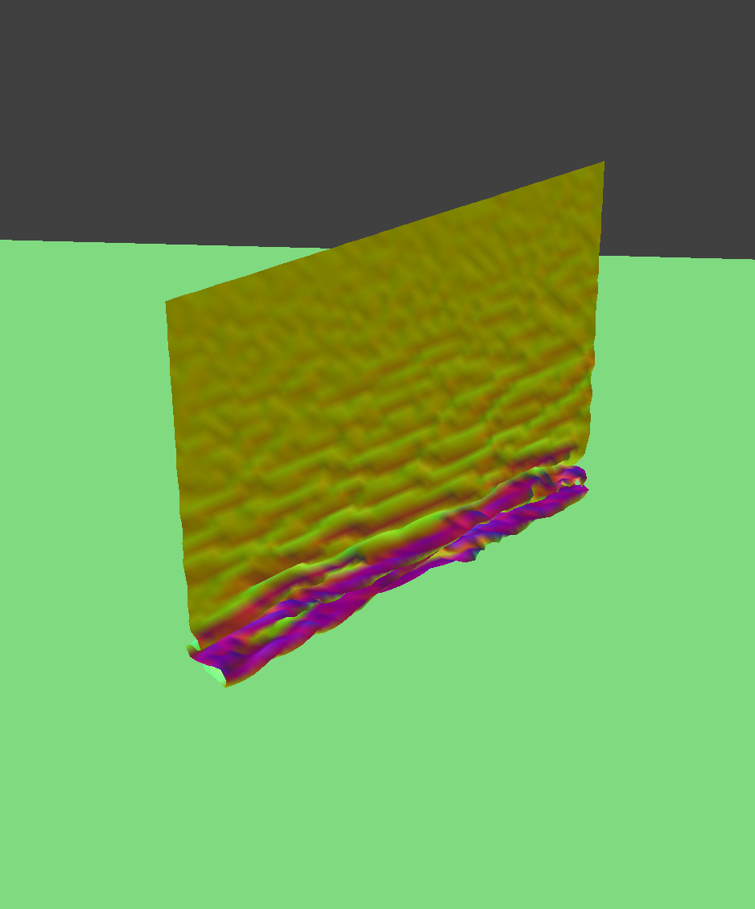
It can be seen that the cloth with lower density appears "lighter" and does not deform under its own weight. The cloth with higher density appears "heavier" and sags more under its own weight, which causes it to fold and collide with itself more.
Self-collisions with various spring constant (ks)
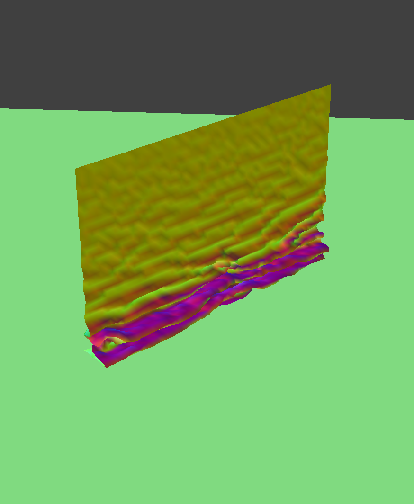
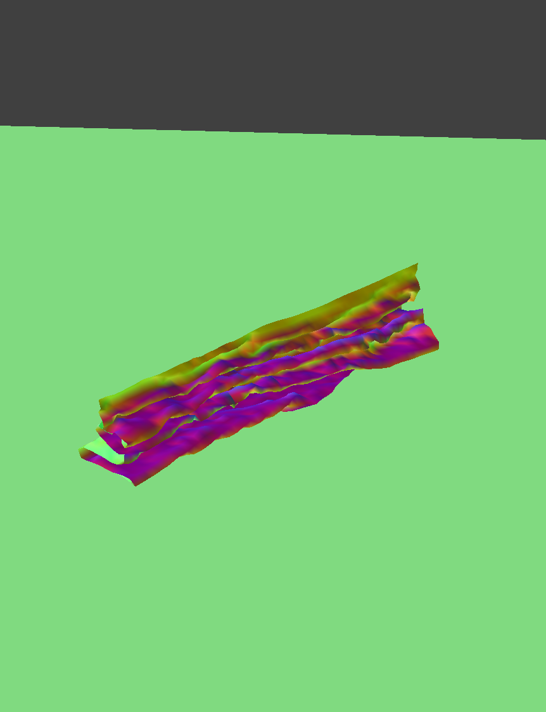
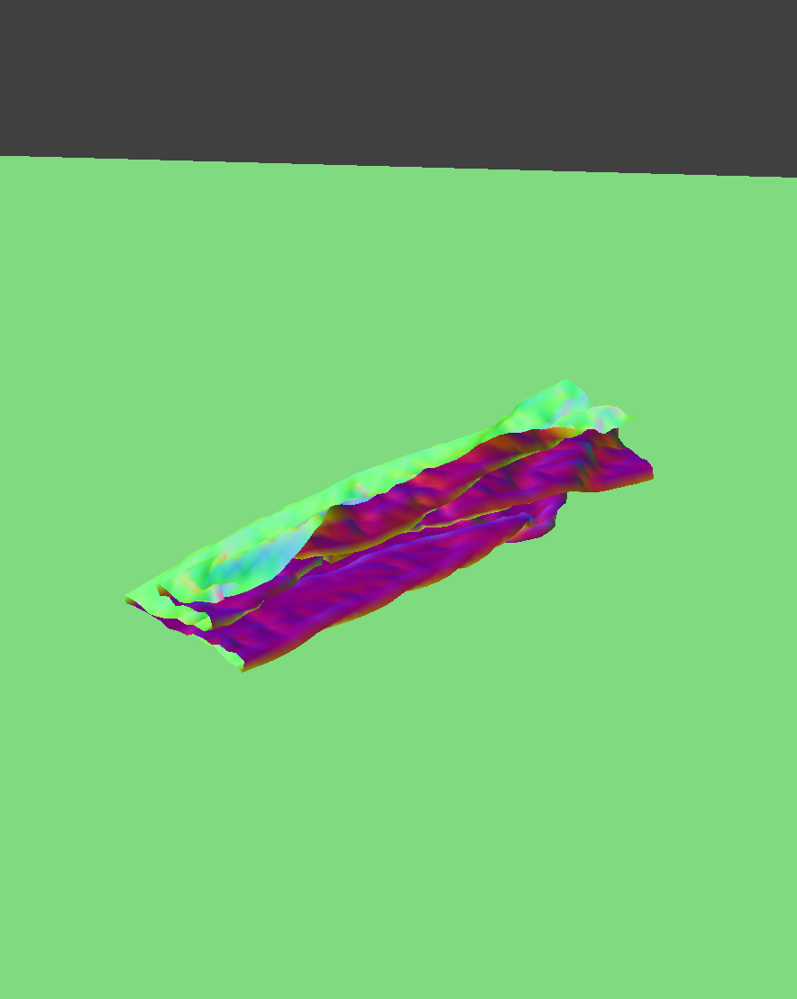
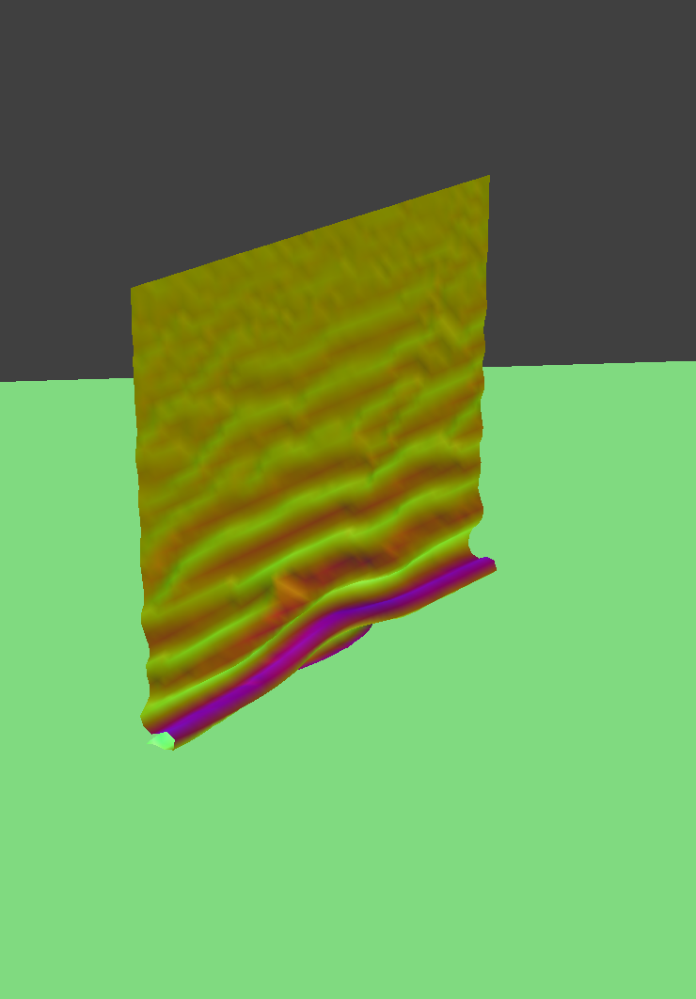
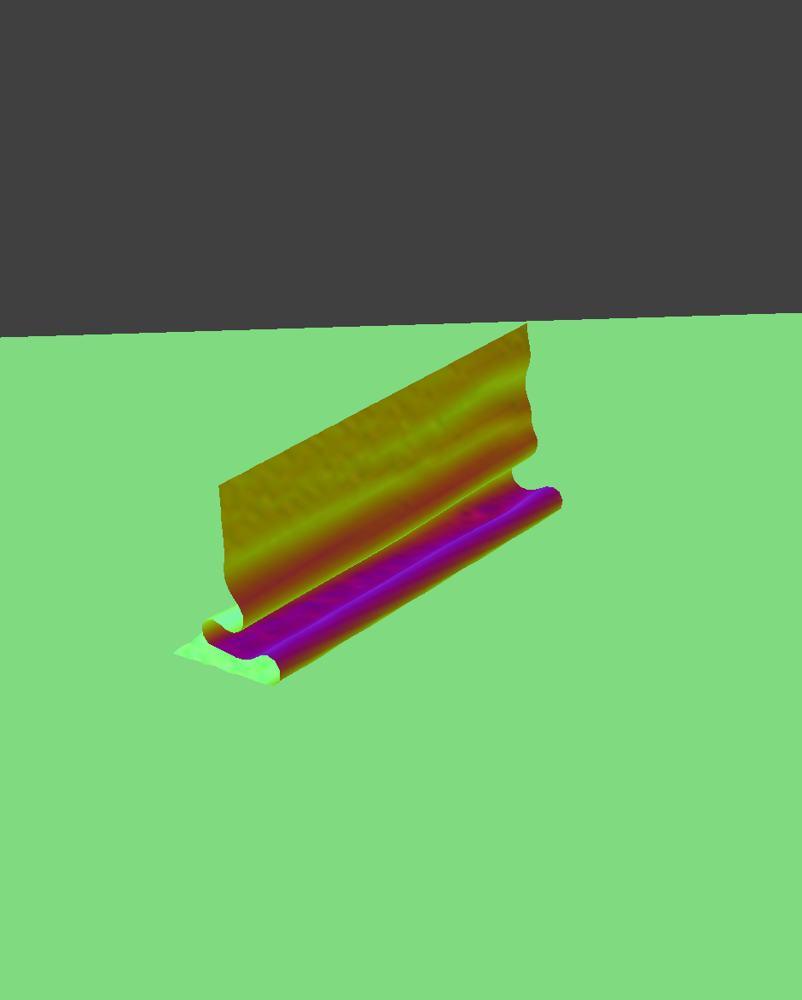
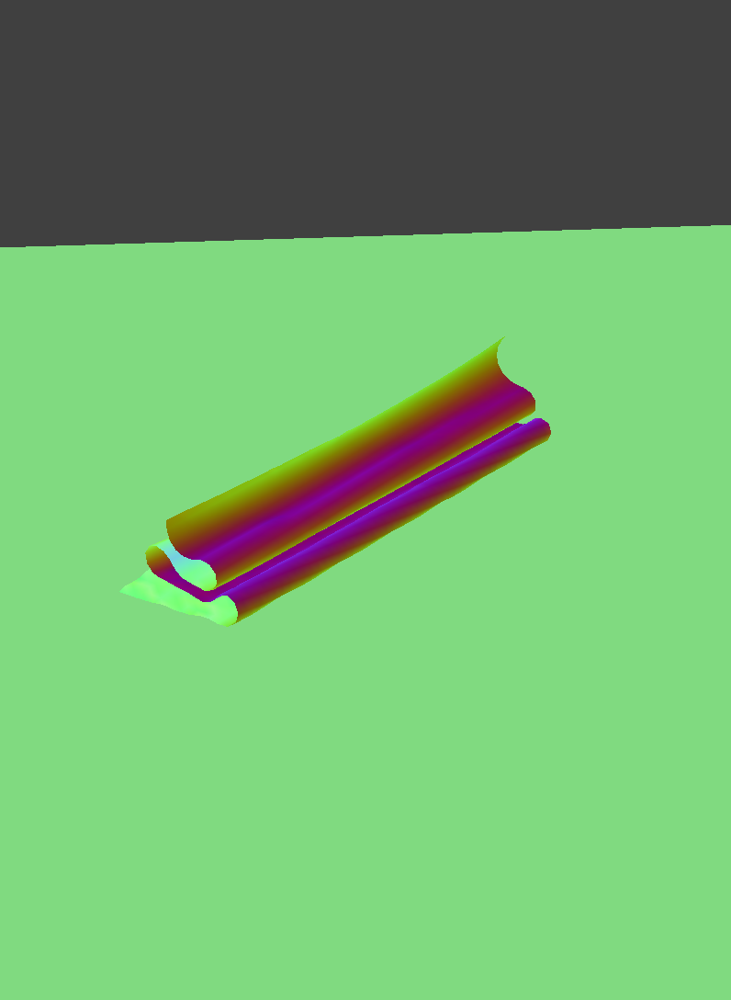
It can be seen that the cloth with spring constant 500 is more flexible and folds more, while the cloth with spring constant 50,000 is stiffer and folds less.